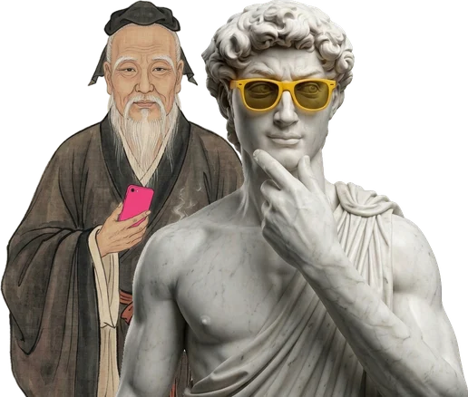
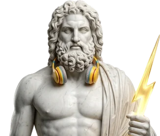
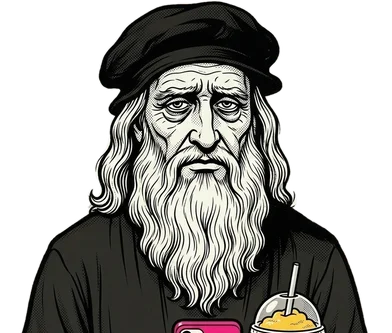
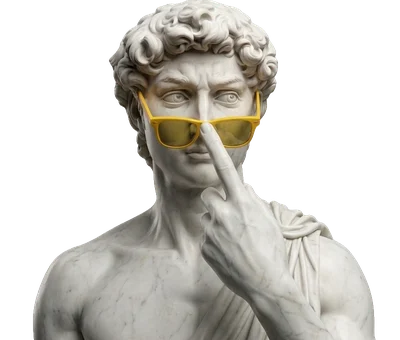

Busca la del video que viste y tócala: ahí está todo, paso a paso.
Lista de espera · pruébala gratis

Confucio y David · Edita tu reel en minutos
Bolívar · Desmonta cualquier reel

Zeus y Einstein · Edita tu reel en minutos

Leonardo y la Mona Lisa · Edita tu reel en minutos

David · Desmonta cualquier reel
¿Quieres usar Cherry? Únete aquí →
 GuíasGuías
GuíasGuías